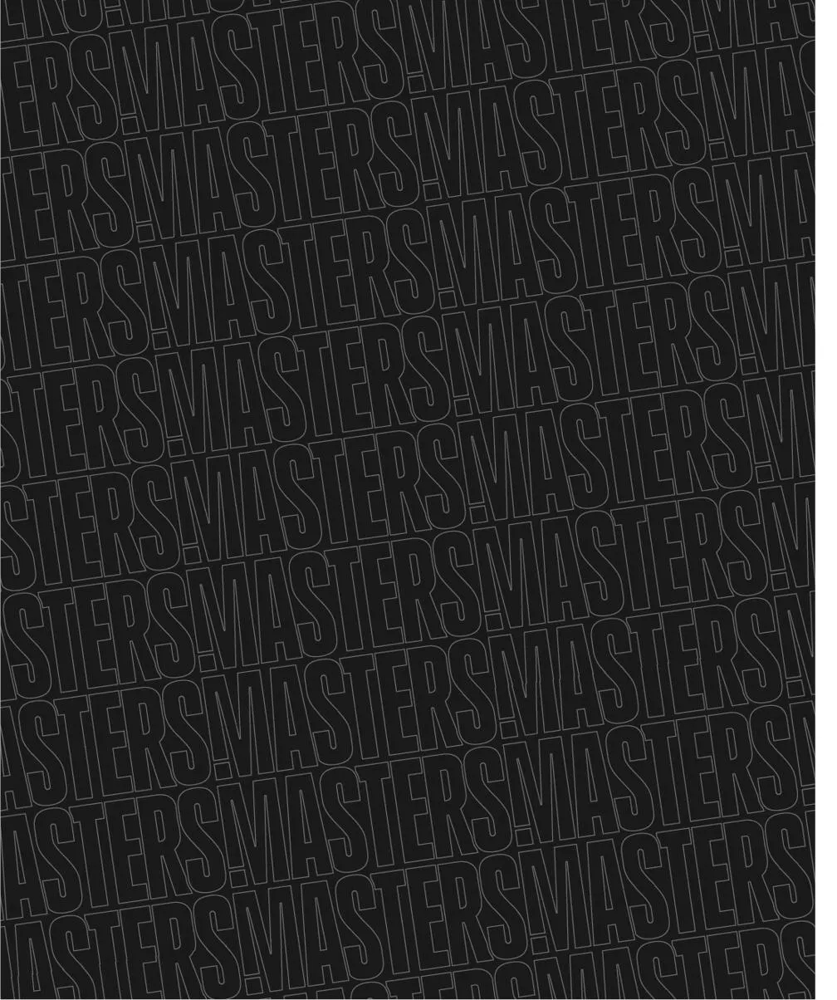

איך בוחרים תספורת שמתאימה לך?
התספורת הכי טובה היא לא זו שראיתם על מישהו באינסטגרם — אלא זו שמתאימה לכם: למבנה הפנים, לסוג השיער ולסגנון החיים. במדריך הזה נראה לכם איך לחשוב על זה כמו מאסטר, כדי שתגיעו לכיסא עם כיוון ברור.
שלב 1: לזהות את מבנה הפנים
הכלל הזהב בעולם הספרות: התספורת אמורה לאזן את הפרצוף. המטרה היא לרוב להתקרב לפרופורציה של פרצוף אליפטי (סגלגל), שנחשב המאוזן ביותר.
פרצוף עגול
המטרה — להוסיף גובה ולהאריך את הפרצוף. עדיף שיער בעל נפח למעלה (פומפדור, קוויף) עם פייד בצדדים שיוצר קווים אנכיים. הימנעו מנפח בצדדים.
פרצוף מרובע
יש לכם לסת חזקה — נצלו אותה. כמעט כל תספורת עובדת, אבל קרופ קצר או פומפדור קלאסי מדגישים את הקווים הגבריים. שמרו על צדדים נקיים.
פרצוף מוארך / מלבני
המטרה ההפוכה — לא להוסיף עוד גובה. השאירו קצת נפח בצדדים ואורך בינוני למעלה. פרינג' (שיער שנופל קדימה) עוזר לקצר ויזואלית את הפרצוף.
פרצוף משולש / לב
מצח רחב וסנטר צר — כדאי נפח בינוני למעלה בלי להגזים, ומעט אורך בצדדים לאיזון. זקן קצר עוזר להוסיף רוחב לחלק התחתון של הפנים.

שלב 2: להכיר את סוג השיער
- שיער ישר: מחזיק כמעט כל סגנון, אבל יכול להיראות "שטוח" — נפח וטקסטורה יעזרו.
- שיער גלי: ממש מתאים לקרופ ולמראה טקסטורלי טבעי. אל תילחמו בגלים, נצלו אותם.
- שיער מתולתל: אורך בינוני עם פייד בצדדים נראה מצוין. חשוב מוצר לחות נכון.
- שיער דק / מדלדל: אורכים קצרים־בינוניים עם טקסטורה יוצרים אשליה של נפח. הימנעו מאורך רב שמדגיש דלילות.
שלב 3: להתאים לסגנון החיים
תספורת מושלמת שאין לכם זמן לתחזק — לא מושלמת. שאלו את עצמכם: כמה זמן אתם מוכנים להשקיע בבוקר? כל כמה זמן תחזרו לתספורת? מראה עם skin fade דורש תספורת כל שבועיים, בעוד שגזרה קלאסית "סולחת" יותר. תגידו לנו את האמת על השגרה שלכם — ונבנה משהו שעובד.
הטיפ של המאסטר: תביאו תמונה של מה שאתם אוהבים — אבל תהיו פתוחים. לפעמים גרסה מותאמת של הרעיון תשב עליכם הרבה יותר טוב מהמקור.
לא בטוחים? זו בדיוק העבודה שלנו
ב-Masters אנחנו לא סתם מספרים מה שביקשתם. אנחנו יושבים, מבינים את מבנה הפנים, סוג השיער והראש שלכם — וממליצים על מה שבאמת יעבוד עליכם. בואו נבנה יחד את המראה שלכם.